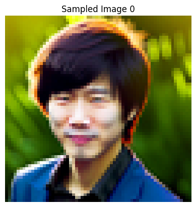
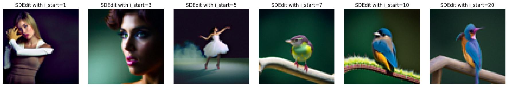
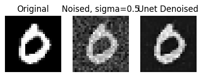

an oil painting of a snowy mountain village

a man wearing a hat
a rocket ship
In this part, we use the DeepFloyd IF Diffusion Model to show some interesting results! We start by first sampling images from the pre-trained model using different prompts and `num_inference_steps`.
Here are the results of the 3 text prompts with 20 inference steps, using stage 1, which returns a 64x64 image:
|
an oil painting of a snowy mountain village |
a man wearing a hat |
a rocket ship |
Here are the outputs of stage 2, which returns 256x256 images, using 20 inference steps:
|
an oil painting of a snowy mountain village |
a man wearing a hat |
a rocket ship |
Using the oil painting of a snowy mountain village, here are some other outputs with varying `num_inference_steps` for both stages:
|
Stage 1, 100 inference steps |
Stage 1, 500 inference steps |
|
Stage 2, 100 inference steps |
Stage 2, 500 inference steps |
Reflection: As we see, the outputs of stage2 are higher resolution and have more detail than stage1. Furthermore, increasing the num_refinement_iters significantly improves image quality. We see the 200 iter image has more detailed, realistic houses and vegetation. However, with too many iterations, the returns seem diminishing, potentially incorrect- with 500 iters, the model added a bridge in the image which doesn't make sense in this context.
Seed: At the top of each cell that creates results, I call `seed_everything()` to ensure reproducible results. Throughout the notebook, I use 180 as my seed; near the end, I experimented with different seeds and picked the best-looking one.
Here, we implement forward(im, t): this function performs the forward diffusion process, taking image im and noising it until timestep t. Below is the starting Campanile image, along with it being noised at levels 250,500,750.
|
Original Test Image |

Noise=250 |
Noise=500 |
Noise=750 |
This is our first approach to denoising using the classical method of Gaussian blur filtering. I experimented with the Gaussians' parameters for each noise and display the best I could achieve. As we see, getting good results even on the lower-noise image is basically impossible.

|
Here, we use the pretrained diffusion model to predict the noise in each of the above images. Using this predicted noise, we can remove it and get an estimate of the original image. The results of this one-step denoising are shown below.

|
While one-step denoising is a step-up, it still started to degrade on higher noise. In this part, we iteratively denoise: starting with noise x_1000, we can estimate x_999, and so on until the original image x_0. To speed up this process, we can also stride our iterations, where the list strided_timesteps determines how many steps we skip each iteration. In this part, I implement iterative_denoise(image, i_start): this function starts at strided_timesteps[i_start] and denoises image repeateedly until we hit the final timestep entry. The following result highlights this process: we first use forward() to noise our test_im with the appropriate t. Then, we take this noisy image, and use iterative_denoise and try to get back the original image.
The first row displays every 5th iteration of the denoising loop. The second row shows the final image predictions for the 3 denoising methods (classical, one-step, iterative) we have looked at so far.
We now switch gears from denoising a noisy image to generating new images! We do this by starting with pure random noise, setting i_start = 0, and lettting iterative_denoise run. By denoising pure noise, we are essentially generating new content! Since the model requires language conditioning, we also use the string "a high quality photo".
Below are 5 sampled images generated using the above procedure.
Some of the above generated samples weren't the best. In this part, we use classifier-free guidance to address this. In CFG, in addition to estimating a text-conditioned noise estimate, we also estimate an unconditional noise estimate, and combine these 2 (using gamma) to get our new noise estimate. Setting gamma > 1 allows us to produce much higher quality images. In this part, I implement iterative_denoise_cfg, which works similar to iterative_denoise, except using the new noise estimate described above. 5 sampled images using this method are shown below. As we can see, these appear to be of much higher quality.
|  |
In this part, we implement the SDEdit algorithm: by taking our test image, noising it a little, and then forcing it back to the image manifold without any conditioning, we get a novel image that is still similar to our original image! Below are the results on 3 test images, with varying levels of noise, where noise is indicated by the i_start index.
|  |

|
Here, we start with non-realistic images like cliparts from the web or hand-drawn sketches. By repeating the process above of noising these images and projecting them back on the image manifold, we are able to get realistic versions of our cartoon/sketches.
The results are shown for 1 web image (lion clipart), as well as 2 hand-drawn sketches. For each image, we show the results for the same range of i_start values as above.
In this part, we apply the same process as above except we only generate new content in a specific location specified by a mask. To accomplish this, in our denoising loop, every step we will force x_t to have the same pixels as x_original everywhere where the mask is 0- this way, new content is only created inside the edit mask.
The results of this inpainting procedure on 3 test images are shown below. For each image, I first show the original image, the mask, and the area to edit, as well as the final inpainting result.

|
Now we guide the image projection through a language prompt. We use the precomputed prompt embeddings instead of the "unconditional" prompt embedding in the iterative_denoise_cfg function now. The result is that the generated images gradually look like the original image, but also fit the text description.
Results are shown on the test image and 2 other images, with the same i_start values for noise.
|
Text prompt: a rocket ship 
|
|
Text prompt: a mean waring a hat |
|
Text prompt: a photo of the amalfi coast 
|
In this part, we implement an optical illusion using diffusion models. We generate an image that looks like 2 different things when flipped upside down. To accomplish this, in our denoising loop, we call Unet(x_t, p_1) to get noise estimate 1, and call flip(Unet(flip(x_t), p_2)) to get noise estimate 2. p_1 and p_2 here are the different prompt embeddings. By averaging these noise estimates to get our new noise estimate, every iteration, as we denoise, we are moving towards BOTH images, with one being flipped upside down.
3 such visual anagrams are highlighted below.
Here, we create hybrid images that change in interpretation based on viewing distance, similar to project 2. Similar to above, we generate 2 noise estimates, 1 for each image. Then, we low-pass filter 1 of these and high-pass filter the other, and add them to get our new noise estimate. This way, as we iteratively denoise, we are moving towards an image whose low-frequency components are similar to those of im1 AND whose high-frequency components are similar to those of im2.
We show 3 such hybrid images below.
In this part, we build and train our own diffusion models from scratch on the MNIST dataset.
In this part, we first use PyTorch to implement the UNet using the architecture specified. This is a one-step denoiser as it takes in an noisy image z and predicts a clean iamge x.
To train this model to denoise, we generate noisy data from the MNIST data: for all (normalized) x in MNIST, the noisy training point z = x + sigma * epsilon, where epsilon is sampled from the standard normal. Below is the noising process visualized over sigmas in [0, 0.2, 0.4, 0.5, 0.6, 0.8, 1.0] for each sample digit.
Below is the final training loss curve, as well as sample results on the test set after the 1st and 5th epoch.
| Training Loss | |||||||||
|---|---|---|---|---|---|---|---|---|---|
| Epoch 1 Test Set Results |

|
||||||||
| Epoch 5 Test Set Results |  | ||||||||
Finally, to ensure the model's robustness, we also evaluate it on out-of-distribution noise levels after training finishes. The results of the model denoising for varying sigma values is shown below.
In this part, I injected time into our unet using FCBlocks, updated the training loop to pass in normalized T as training happens, and adjusted the ddpm_forward() function accordingly. I also implemented the ddpm_sample() function for sampling digit images from the model after it finishes training. This was used to display sampling results after 5 and 20 epochs of training.
Below is the training loss curve as well as sampling results after 5 and 20 epochs of training.
| Training Loss | |||||||||
|---|---|---|---|---|---|---|---|---|---|
| Epoch 5 Sampling Results | |||||||||
| Epoch 20 Sampling Results | |||||||||
In this part, we additionally condition our Unet on the digit 0-9. We one-hot encode the image label, and also dropout this vector 10% of the time so our model is still capable of unconditional generation. The c vector is injected in the same place as the time, similarly using FCBlocks.
Below is the training loss curve as well as sampling results after 5 and 20 epochs of training.
| Training Loss | |||||||||
|---|---|---|---|---|---|---|---|---|---|
| Epoch 5 Sampling Results | |||||||||
| Epoch 20 Sampling Results | |||||||||